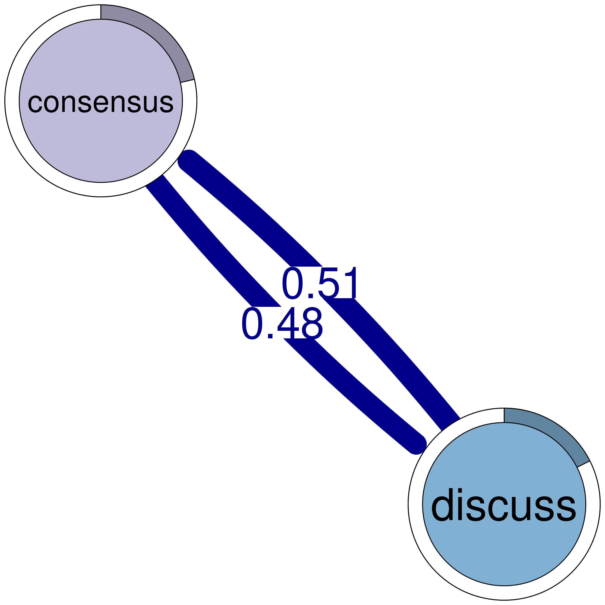
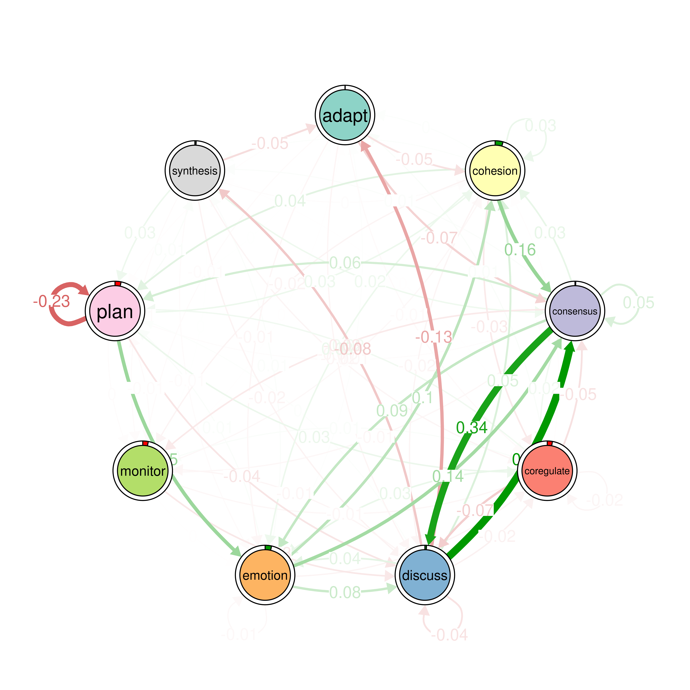

# Install 'tna' package from CRAN if needed (uncomment if required).
# install.packages("tna")
# Load packages
library("tna")
library("tidyverse")
# Load example data provided within the 'tna' package,
# representing group regulatory interactions
data(group_regulation)
# Run FTNA on 'group_regulation' data using raw counts of
# transitions ("absolute" type) and print the result
model <- ftna(group_regulation)
# Print the output to inspect the model
print(model)16 Capturing The Breadth and Dynamics of the Temporal Processes with Frequency Transition Network Analysis: A Primer and Tutorial
Abstract
This chapter presents Frequency-Based Transition Network Analysis (FTNA), a novel method to model the relational dynamics and the transitions between states or events based on the frequency of occurrence of transitions. Compared to TNA based on Markov models, FTNA is well-suited when the research focus is on describing, summarizing, or visually analyzing the observed data without the probabilistic assumptions and constraints. Compared to process mining, FTNA leverages statistical techniques such as pruning, bootstrapping and permutation to validate and compare models. Moreover, FTNA employs networks as a lens to represent and analyze transitions, which provides a rich family of metrics and analyses such as centrality measures, communities and patterns. In this chapter, we offer an introduction to the method and its main features, along with a step-by-step tutorial in R using a case study in group collaboration.
1 Introduction
Capturing the dynamics of learning has become an increasingly important goal for educators and researchers due the value it brings to understanding the learning process [1]. This chapter introduces a novel method for capturing such dynamics based on how events are dynamically interrelated [2]. Frequency-Based Transition Network Analysis (FTNA) is a type of transition network analysis (TNA) where the network structure is based on modelling the frequency of transitions. FTNA models the count or number of occurrence of each transition between states and use them as weights reflecting the magnitude of dynamic relationships [4]. This approach is a straightforward representation of the relational dynamics within the learning process, capturing how often one state follows another without conditioning on dependencies or making strong assumptions about the process.
In the previous chapter, we have studied TNA, which assumes that the learning process follows a Markov process where the transitions are probabilities and the current states depends on the previous state [2, 5]. In comparison, FTNA is well-suited when the research focus is on describing, summarizing, or visually analyzing the observed data without the probabilistic assumptions —and constraints— of Markov modeling. Additionally, there are contexts where FTNA is more suitable (see below). As a method, FTNA has a rich tool set of techniques and large array of analytical functions to harness the dynamics of the learning process and its temporality. These tools enable researchers to identify the dominant events, the notable patterns, as well as to compare different processes [5, 6]. More importantly, given that FTNA inherits most of the capabilities of TNA, it can be used to draw inferences with its statistical methods, e.g., permutation and bootstrapping [2].
2 The basic principles of FTNA
FTNA captures the dynamic relationship between events, i.e., how an event leads to another, follows another, or is dependent on a previous event. These events and the transitions between them are used to construct a transition (edge) between events. The aggregation of edges gives rise to the network of transitions [3, 4, 7]. This is similar to the well-known post-reply networks - yet in reverse direction- when a reply follows a post in forum discussions or chat messages [8]. However, no reply is required here, and the post-reply networks are not strictly sequential and only address conversations. FTNA extends such formulation to modeling transitions between any temporally related events, e.g., learning actions, strategies, roles, states, emotions to mention a few [2]. Also, FTNA models the transitions, or the succession of events rather than replies.
While FTNA allows the full potential of traditional network analysis, it extends these functions with several modeling and statistical techniques (e.g., permutation, scaling, bootstrapping etc.) that enhance the analysis and provides tools for understanding how the events unfold and draw inferences using statistical rigor [5, 6]. Similarly, FTNA enables the use of most TNA functions but with a different interpretation and modeling purpose. That said, it is important here to draw a comparison with TNA which is based on Markov modeling and explain when and why FTNA may be needed [2].
Markov-based models assume that the transition probability between events depends only on the current state (the “Markov property”) and not on prior states, meaning that the process has no memory nor is it influenced by any events beyond the immediate events [9]. This assumption may be unrealistic in some processes, where transitions might depend on a broader sequence of previous states (e.g., reasoning over multiple steps). FTNA avoids this limitation, capturing sequences of behaviors without requiring this independence assumption which makes it more flexible for processes where this independence assumption may not hold. In some analyses, the goal may not be to predict future behavior based on current states (as in a Markov models) but rather to identify patterns and structural relationships among observed behaviors without imposing a model-based structure. FTNA models observed patterns of any length or breadth. This is because FTNA is flexible in representing longer-range dependencies or multi-step behaviors by aggregating transitions without conditioning on prior states. Lastly, FTNA is more appropriate for handling small datasets or processes where some transitions are rare. This is because Markov models often require substantial data to produce reliable probability estimates. In contrast, frequency-based TNA is often robust with smaller datasets, as it only tallies transitions rather than estimating conditional probabilities and therefore, does not inflate or conflate the modeled process [5, 6].
It should also be mentioned that FTNA holds resemblance with frequency based process mining [10], since both techniques can be used to represent the frequency of transitions between events or states. However, while process mining is a valuable exploration and visualization tool, it has been heavily criticized for its lack of statistical rigor when it comes to identifying (statistically) meaningful transitions and comparing networks, which are two limitations that FTNA overcomes. Moreover, current implementations in R do not allow to filter out infrequent transitions (only infrequent nodes), which limit the opportunities for meaningful analysis and visualization [9, 10].
3 The building blocks of FTNA
The building blocks of FTNA are transitions between events where each event is a node, and the weight of the edge is the transition frequency between the edges. Rather than calculating probabilities, FTNA tracks the count of these transitions to reveal a straightforward picture of patterns in sequential data. Let us consider a hypothetical example where we model the learning transitions. Imagine we have five types of activities: Watch Video, Quiz, Read Materials, Submit Assignment, and Feedback. The FTNA model captures the frequency of students moving from one activity to another: 60 transitions from “Watch Video” to “Quiz” mean a frequency of 60, while “Quiz” leading to “Submit Assignment” shows a frequency of 100. This raw count provides a direct representation of how students move through the learning steps with no transformation or scaling (Table 16.1).
| From | To | Frequency (weight) |
|---|---|---|
| Watch Video | Quiz | 60 |
| Watch Video | Read Materials | 10 |
| Quiz | Submit Assignment | 100 |
| Read Materials | Submit Assignment | 20 |
| Read Materials | Feedback | 30 |
| Read Materials | Quiz | 50 |
| Submit Assignment | Feedback | 100 |
| Watch Video | Feedback | 30 |
4 The mathematical basis of FTNA
The FTNA network can be represented as \(G = (V, E, W)\) with three basic elements:nodes (\(V\)), directed edges (\(E\)), and weights (\(W\)). Nodes serve as the the elements, states or events while edges represent transitions between them. For example, if \(v_i\) is Watch Video and \(v_j\) is Quiz, the edge \((v_i, v_j)\) captures the transition from watching a video to attempting a quiz. The weight function \(W(v_i, v_j)\) represents the transition frequency—how often students move from activity \(v_i\) to \(v_j\). A weight of \(W(v_i, v_j) = 60\) signifies that students frequently transition from Watch Video to Quiz (60 times). From Quiz to Submit Assignment (\(v_2 \to v_4\), \(W(v_2, v_4) = 100\)): showing that student transitioned from a quiz directly to submitting an assignment 100 times which is more than the previous edge.
Mathematically, this can be represented as follows: let \(T_{ij}\) denote the absolute frequency of transitions from state \(v_i\) to state \(v_j\). If we consider a state space \(V = \{v_1, v_2, \ldots, v_n\}\), the transition matrix \(T\) has entries defined as \[ T_{ij} = \text{number of transitions from } v_i \text{ to } v_j. \] This approach does not normalize the values, allowing the raw frequencies to capture the total count of each transition observed in the data. However, researchers can build networks in different ways and scaling that makes it easier to read or interpret namely normalized or rank-based FTNA which are discussed below.
4.1 FTNA Networks based on normalized values
Counts and raw frequencies may be conflated by several factors and are not directly comparable. That is why many network measures are best understood as ranks or scales. For instance, comparing across two classrooms where classroom A has 32 students and classroom B has 48. It becomes obvious that this is an unfair comparison, given that the larger classroom is expected to generate more data. The same can be applied about tasks which differ in duration, workload or design. Therefore, scaling allows a better way of comparison not only in the same dataset but also for comparison when data comes from different studies. In TNA, the scaling transform raw counts into values between zero and one, which as we mentioned help to compare transitions more uniformly by accounting for different sample sizes making it directly comparable regardless of absolute occurrence. One option in FTNA is min-max normalization. In our example, given that the minimum frequency is 10 and the maximum frequency 100, the formula for normalization is:
\[ \text{Normalized Weight} = \frac{\text{Frequency} - \text{Minimum Frequency}}{\text{Maximum Frequency} - \text{Minimum Frequency}} = \frac{\text{Frequency} - 10}{100 - 10} \]
For example, given that the transition from Quiz to Submit Assignment has the highest frequency, it has a normalized weight of 1.00, while Watch Video to Read Materials has a normalized weight of 0.00, because it is the least frequent transition in the network (Table 16.2) (Figure 16.1).
| From | To | Frequency | Normalized Weight |
|---|---|---|---|
| Watch Video | Quiz | 60 | 0.56 |
| Watch Video | Read Materials | 10 | 0.00 |
| Watch Video | Feedback | 30 | 0.22 |
| Quiz | Submit Assignment | 100 | 1.00 |
| Read Materials | Submit Assignment | 20 | 0.11 |
| Read Materials | Feedback | 30 | 0.22 |
| Read Materials | Quiz | 50 | 0.44 |
| Submit Assignment | Feedback | 100 | 1.00 |
Another option is to simply use max normalization, i.e., dividing the weights by the largest weight. This option can be useful when the smallest weight is positive and we would like keep it so after normalization, whearas the min-max normalization would make such weights zero.


4.2 FTNA Networks based on ranked Frequencies
The “ranked” option in TNA orders transitions in terms of their frequency and scales these ranks to fit within 0 to 1 for easier readability. Instead of counting or scaling the frequencies, this option assigns a rank based on how frequently each transition occurs, with the most common transition assigned the highest rank, and then scales these ranks. In case of ties, the average rank is used. Finally, the ranks are min-max normalized. Ranking can be particularly insightful in contexts where the order of transitions —rather than their absolute counts— offers meaningful insights. Equidistant ranking is also useful when comparing two processes generated with different mechanisms, i.e., to transform the data to comparable scales.
The equidistant normalized weight can be calculated for the previous table based on the rank as follows (Table 16.3):
- Top 1 and 2 (100): Normalized Weight \(\,= 1.0\)
- Top 3 (60): Normalized Weight \(\, \approx 0.769\)
- Top 4 (50): Normalized Weight \(\,\approx 0.615\)
- Top 5 and 6 (30): Normalized Weight \(\,\approx 0.385\)
- Top 7 (20): Normalized Weight \(\,\approx 0.154\)
- Top 8 (10): Normalized Weight \(\, = 0.0\)
| From | To | Frequency | Rank | Scaled rank |
|---|---|---|---|---|
| Quiz | Submit Assignment | 100 | 7.5 | 1.0 |
| Submit Assignment | Feedback | 100 | 7.5 | 1.0 |
| Watch Video | Quiz | 60 | 6 | 0.769 |
| Read Materials | Quiz | 50 | 5 | 0.615 |
| Watch Video | Feedback | 30 | 3.5 | 0.385 |
| Read Materials | Feedback | 30 | 3.5 | 0.385 |
| Read Materials | Submit Assignment | 20 | 2 | 0.154 |
| Watch Video | Read Materials | 10 | 1 | 0.0 |
We can visualize the differences between the two networks in Figure 16.2.


5 FTNA features
FTNA inherits most of the capabilities of TNA that were discussed in the TNA chapter which will be mentioned here briefly. However, some features may not be transferable or applicable to FTNA and some features are only available in FTNA which will be discussed here [2].
5.1 Visualization
FTNA visualization helps researchers get a bird’s eye view of the modeled process and capture patterns, central learning events, and how they are temporally related to each other as well as the strength of these connections. FTNA plotting relies on the qgraph framework which offers a rich and modern framework for network visualization with wide array of features [11]. These visualization features include custom and fixed layouts to enable comparison across processes as well as several customization options for node, edge shapes, forms and sizes. Comparative plots can be enhanced by having fixed layouts to allow easy comparisons. Furthermore, most FTNA output can be plotted using the plot function which includes networks, centrality objects and communities.
5.2 Network measures
Similar to TNA, FTNA offers network measures at the edge, node and network levels. Network level measures provide insights about the whole network structure, e.g., network connectivity, density, and dominance of events. Node level measures —e.g., centrality measures— allow researchers to quantify or rank the importance of a state or event in the network. Researchers can find which behaviors or cognitive states are central to the learning process, which events are more important (receive more transitions), or bridges other connections (betweenness centrality) [12–14].
Given that FTNA allows multi-step modeling, centralities that capture the downstream diffusion of events or propagation of a certain state are more plausible here. For instance, diffusion centrality can help understand which events are more likely to diffuse or result in more interactions or long threads of related events, e.g., longer “chains of thoughts” or multiple steps in a learning process [15]. Given that FTNA is built with emphasis on edges, edge centralities are rather important here. Edge-level measures —e.g., edge centralities— can tell which transitions are central in the learning process and are therefore critical to the models [16].
5.3 Network structure and patterns
Patterns are special configurations or constellations that manifest in the data as strong connections between network nodes. They are the hallmark of the structure and the building blocks of the dynamics of the learning process. What makes patterns unique is that they tell how the data was generated, how the underlying process shaped learning or led to the emergence of certain patterns [1, 2, 17]. For instance, we expect a strong connection in a network of self-regulation between planning and task execution in well-performing students. We also expect to see strong connections between dialogue moves of argument and agreement in cohesive groups. Finding such patterns allows us to, e.g., track students, offer them support, verify existing theories about the learning processes and also test existing ones. Like TNA, patterns may include cliques: dyads (two strongly connected nodes), triads (three strongly connected nodes), or communities (of any size) which reflect underlying patterns of connections inferred from the network [2].
5.4 Network validation
Like TNA, FTNA offer several statistical methods for verifying and establishing the significance of identified edges through bootstrapping. Bootstrapping is a re-sampling technique that in our context helps filter out small, negligible or unstable edges resulting in a rigorous model. In doing so, researchers can understand which parts of the model are weak and therefore, cannot be reliable in future analyses. Significant edges here represent transitions that are likely to appear in future iterations, and more importantly cannot be used for inference about future processes [6]. Bootstrapping is a unique feature in TNA and is not offered by other methods, e.g., process mining [10] or social network analysis [14]. The inclusion of bootstrapping in FTNA along with other statistical inference methods (permutation and case-dropping for centrality) are in fact what differentiates FTNA from traditional network analysis. This is of course in addition to the distinct data sources, the modeling choices as well as the contextual differences [2, 18].
5.5 Comparison between groups
Researchers and educators encounter conditions where groups may differ based on contexts, such as students who engage in collaborative versus non-collaborative learning, high versus low levels of achievement, or learning formats like problem versus project based learning. When researchers like to compare the learning process resulting from either conditions, they can do this using counts, e.g., comparison of frequencies or other techniques like process mining. Typically, such process comparisons relies on visual inspection, such as contrasting process maps or network models, which can reveal the descriptive differences but fall short of demonstrating the statistical significance or pinpointing where these differences matter the most [2, 19].
FTNA enhances this comparison by using a robust permutation-based approach to process comparison. Permutation allows not only a clear visual representation of differences but also enables researchers to estimate the statistical significance of each transition in the network and automatically quantifying the magnitude of differences in transition frequencies. This level of statistical rigor supports more meaningful inferences and contributes to theoretical development.
6 FTNA tutorial
FTNA is capable of analyzing any data that can be represented as as a temporal sequence with transitions between events or states occurring over time. FTNA is particularly well-suited for categorically ordered event data, such as sequences of learning events, phases, roles, dialogue moves, or interactions, to name a few. The source of this data can vary, including time-stamped learning management system data, coded interactions, event-log data, or ordered event data.
In this tutorial, we will use the tna R package [6], alongside other essential packages that facilitate data manipulation and visualization. It is assumed that the reader is familiar with the R programming language. If that is not the case, it is recommended to refer to previous tutorials on the basics of R [20], data cleaning [21], basic statistics [22], and visualization [23]. It is also recommended to have prior knowledge about Markov models [9] and to have read the previous chapter on TNA [2].
Initially, the process involves loading the necessary packages to set the groundwork for analysis. The tna R package is the main package that we will rely on for analysis which will build the FTNA models. The tna package provides a wide range of functions for estimating, visualizing, and manipulating FTNA models. In addition, it offers various functions for calculating network metrics, such as centrality measures, and discerning patterns like dyads and triads. The package also includes verification functions, such as bootstrapping and permutation tests. We will also use the tidyverse package for data manipulation, wrangling and visualization [24].
The build_model function from the tna package accept several types of data, namely, sequence data, data frames in wide format and square matrices. Sequence data must be in stslist format (sequence object), which is typically created using the seqdef() function from the TraMineR package [25, 26]. This sequence defines the data and its order (for guidance on creating a sequence object, please refer to [26]). Also, tna can accept wide data format where each row represents sequential data and each column is a time point with no extra columns. Finally, the tna package can also process event data with the highly flexible prepare_data() function. Like in Table 16.4, each row represents a sequence by a person, group or a in a task, and column represent the order of such events.
| 1 | 2 | 3 | 4 | 5 |
|---|---|---|---|---|
| Submit Assignment | Watch Video | Read Materials | Watch Video | Read Materials |
| Watch Video | Read Materials | Submit Assignment | Read Materials | Watch Video |
| Read Materials | Watch Video | Watch Video | Submit Assignment | Read Materials |
| Read Materials | Submit Assignment | Watch Video | Read Materials | Watch Video |
| Watch Video | Read Materials | Watch Video | Read Materials | Submit Assignment |
The FTNA analysis starts by constructing the model which is simply performed by passing the data to the ftna() function or to the build_model() function specifying the type like build_model(data, type = "frequency"), or simply ftna(data). The FTNA model contains all the information necessary for subsequent analyses, such as plotting, centrality estimation, or model comparison. We can also scale the frequencies using the scaling argument, which can be:
“minmax”: This option scales the frequencies between 0 and 1 via min-max normalization such that the lowest weight becomes 0 and the largest becomes 1. Note that if all frequencies are positive, then the lowest will be converted to a weight of zero.
“max”: The frequencies are divided by the largest frequency. This option also scales the frequencies such that the largest weight is 1, but the lowest will only be 0 if some transition never occurred in the original data.
“rank”: This involves ranking all the frequencies from highest to lowest with the average used for ties. Ranking highlights the most significant transitions and provides a standardized way to compare processes across different contexts.
We can also perform multiple types of scaling sequentially, for example scaling = c("rank", "minmax") would first rank the frequencies and them scale them between 0 and 1 with the min-max normalization.
The (F)TNA model is organized as a list that has four elements to facilitate the analysis and can be accessed by the users if needed. These are:
Weights (
weights): These are the transition weights (frequencies or scaled frequencies) of moving from one state or event to another, serving as the primary element for various network processes, analyses, and visualizations.Initial States (
inits): These are the probabilities of starting in each state at the first time point. Understanding these initial states helps show how events evolve in relation to their starting conditions.Labels (
labels): The descriptive names for each node in the network and is included to enhance the interpretability of the analysis. The labels are automatically retrieved from the alphabet of the sequence object or the categories in the data frame.Data (
data): This is a version of the sequence data (or data frame) that contains all the necessary sequence data, converted into an internal format used by thetnapackage for further analysis (permutation, bootstrapping etc.).
The code below loads the tna package. Next, it retrieves the built-in group_regulation dataset included in the package, which has data on group behaviors related to regulation during a collaborative project based on the paper by [5]. Then we call the ftna() function with the group_regulation dataset as the data argument. The resulting model is an FTNA model with frequencies as edge weights and stored in an R object called model, which can be further utilized for analysis. We also use call print(model) to view the model. The model output shows the labels, the transition frequency matrix and the initial probabilities.
State Labels
adapt, cohesion, consensus, coregulate, discuss, emotion, monitor, plan, synthesis
Transition Frequency Matrix
adapt cohesion consensus coregulate discuss emotion monitor plan synthesis
adapt 0 139 243 11 30 61 17 8 0
cohesion 5 46 844 202 101 196 56 239 6
consensus 30 94 519 1188 1190 460 295 2505 48
[ reached getOption("max.print") -- omitted 6 rows ]
Initial Probabilities
adapt cohesion consensus coregulate discuss emotion monitor plan synthesis
0.011 0.060 0.214 0.019 0.175 0.151 0.144 0.204 0.019 As we mentioned above, FTNA can be estimated with a scaled transition matrix where the highest transition frequency has the weight of 1 and the lowest has the weight of 0. The resulting transition matrix is easier to read and interpret and more importantly can be useful when comparing across datasets with different samples sizes. The following code estimates a FTNA model using the argument scaling = "minmax". All of the subsequent analysis will be performed using the scaled version given its ease of use, interpretability and ease of comparison across datasets.
# Calculate the Transition Network Analysis (TNA) on the group_regulation
# data with scaled weights between 0 and 1
model_scaled <- ftna(group_regulation, scaling = "minmax")
print(model_scaled) # Print the FTNA model with scaled weightsState Labels
adapt, cohesion, consensus, coregulate, discuss, emotion, monitor, plan, synthesis
Transition Frequency Matrix
adapt cohesion consensus coregulate discuss emotion monitor plan synthesis
adapt 0.00000 0.05549 0.097 0.00439 0.0120 0.0244 0.00679 0.00319 0.00000
cohesion 0.00200 0.01836 0.337 0.08064 0.0403 0.0782 0.02236 0.09541 0.00240
consensus 0.01198 0.03752 0.207 0.47425 0.4750 0.1836 0.11776 1.00000 0.01916
[ reached getOption("max.print") -- omitted 6 rows ]
Initial Probabilities
adapt cohesion consensus coregulate discuss emotion monitor plan synthesis
0.0115 0.0605 0.2140 0.0190 0.1755 0.1515 0.1440 0.2045 0.0195 The last type of model is the ranked model which can be estimated using the argument scaling = "rank".
# Calculate the Transition Network Analysis (TNA) on the `group_regulation`
# data with ranked weights
model_ranked <- ftna(group_regulation, scaling = "rank")
print(model_ranked) # Print the FTNA model with ranked weightsState Labels
adapt, cohesion, consensus, coregulate, discuss, emotion, monitor, plan, synthesis
Transition Frequency Matrix
adapt cohesion consensus coregulate discuss emotion monitor plan synthesis
adapt 2.0 42.0 52 11.5 19.5 31.0 14 9.0 2.0
cohesion 4.0 25.5 72 48.0 38.0 47.0 30 51.0 5.5
consensus 19.5 36.0 67 76.0 77.0 64.0 57 81.0 28.0
[ reached getOption("max.print") -- omitted 6 rows ]
Initial Probabilities
adapt cohesion consensus coregulate discuss emotion monitor plan synthesis
0.0115 0.0605 0.2140 0.0190 0.1755 0.1515 0.1440 0.2045 0.0195 6.1 Plotting
Plotting the FTNA model is a simple process. We simply use the plot() function with the model as the argument i.e., the model_scaled object we estimated earlier. In fact, most FTNA objects can be visualized using the plot() function directly without the need to any arguments. This include centralities, communities, permutation.
As the code below shows, the plot is overly dense and hard to read. This is because even rare and small edges are plotted. In our model, we have 9 nodes, the model includes up to 81 edges and this is far from informative due to the multidimensionality and the difficulty in picking the patterns that matter. The easiest way it to set a minimum value which will hide (but not delete) the edges below that threshold. In the example below, we set the minimum to 0.01 just to show all the model but you can set it to 0.05 or more if you want.
6.2 Interpretation of the model
The model shows strong transitions from “consensus” to “plan,” “discuss” to “consensus,” and “emotion” to “cohesion” highlighting a network structure where agreement, dialogue, and emotional regulation play central roles in influencing and organizing the self-regulated collaboration. The transition between “consensus” and “plan” shows a high transition frequency of 1000 (simply means that it is the highest transition frequency in the network). This indicates a strong direct link where achieving consensus is usually followed by planning further steps. Another prominent transition exists from “plan” to “consensus” with a transition strength of 0.71, showing a feedback loop reinforcing a cyclic pattern of planning and consensus building within SRL.
“Discuss” also appears as a central node with strong outward transitions to “consensus” (0.51) and “emotion” (0.31), highlighting that discussions often yield mutual understanding or emotional bonding. Similarly, “emotion” shows a strong connection to “cohesion” with a transition frequency of 0.368, and to “consensus” (0.362), reflecting how emotional states may influence group cohesion and shared agreement. Other important transitions include “coregulate” to “consensus” (0.474) and “monitor” to “consensus” (0.091), revealing that collaborative regulation and monitoring are necessary for building agreement and cohesion. We also see, “adapt” and “synthesis” show lower transition frequencies overall, suggesting that these may either serve more limited roles in the learning process where synthesis or adaptation occurs with fewer preceding dependencies. In general, we see strong influence on planning and task enactment where emotions and discussion play an important role with less emphasis on adaptation or monitoring.
6.3 Pruning
In many instances, you may want to prune the model, i.e., remove small edges and continue to work with a trimmed model that contain only strong-enough edges. The prune() function is designed to do that by removing —pruning— edges based on specified criteria. The options of pruning are designed to remove small edges (either based on threshold or percentile) or using an algorithm that can retrieve the backbone of the network. The three options are:
Threshold-based pruning allows researchers to specify a fixed numeric value, which deletes all edge weights that are less than or equal to the defined value while keeping the network fully connected (or at least weakly so).
Percentile-based pruning allows to define a numeric percentile where edges with weights that fall below this specified percentile will be deleted. For instance, if a user sets a percentile of 0.20, this will eliminate the lowest 20% of edges based on their weights and retain the rest of strong edges within the network. Both threshold-based and percentile-based pruning make sure that pruning does not disconnect the networks.
Disparity filter uses a disparity filter algorithm to prune negligible edges and retain the backbone of the network. The disparity filter algorithm works by randomizing the network connections, allowing researchers to determine which edges are significantly stronger than expected by chance. Edges are retained if they are significant relative to a null model. However, disparity filter is strict and we recommend using an alpha level of around 0.5 to retain edges that are less likely to have resulted from chance. Please note that the three methods delete edges from the model.
The code below demonstrates the three approaches to pruning we just described, followed by plotting each pruned network for visual comparison (Figure 16.3). First, we use the prune() function with the arguments method = "threshold" and threshold = 0.1 to keep only the edges with weights above 0.1. The second approach, using method = "lowest" and lowest = 0.15, filters the network by retaining the top 85% of edges to remove the weakest 15%. The third method, method = "disparity" with level = 0.5, applies a disparity filter to keep only edges deemed statistically significant within the network structure, thereby helping to reveal meaningful links based on a significance level threshold of 0.5 or edges that are more likely than by chance.
# Pruning with different methods
pruned_threshold <- prune(model_scaled, method = "threshold", threshold = 0.1)
pruned_lowest <- prune(model_scaled, method = "lowest", lowest = 0.15)
pruned_disparity <- prune(model_scaled, method = "disparity", alpha = 0.5)
# Plotting for comparison
plot(pruned_threshold)
plot(pruned_lowest)
plot(pruned_disparity)
plot(model_scaled, minimum = 0.05, cut = 0.1)


Alternatively, to plot the model without deleting any edges, you can hide small edges while retaining them for further computations by setting the minimum argument to a value e.g., 0.05. This will hide the edges below this value (0.05) but will retain the full model for further analysis (Figure 16.4).
plot(model_scaled, minimum = 0.1, cut = 0.01)
6.4 Patterns
Patterns provide insights into the the underlying mechanisms (e.g., behavior) that generated the data. These mechanisms give rise to recurring structures and connections between the learning processes. The study of such structures can help researchers interpret the underlying process, build new hypotheses or verify existing ones and identify areas that may need support (e.g., patterns indicating lack of regulation). FTNA allows users to detect and visualize n-cliques or groups of nodes that are all interconnected with transitions meeting specific criteria.
Cliques are strong, recurring patterns where nodes (representing behaviors or states) are strongly interconnected. While one can get several types of cliques, in FTNA we focus on dyads and triads. Dyads are two strongly linked nodes and triads are three well-connected nodes that reflect more complex dependencies. These strong structures are in a way what form or shape the entire process.
The cliques() function in FTNA allows users identify different cliques of different sizes by specifying the number of nodes in each clique. For instance, setting size = 2 will identify dyads with strong pairwise mutual relationships. The function also has a threshold argument to get only dyads which are strongly connected above that threshold to ensure that only meaningful connections are visualized. Triads can be also identified in the same way by setting the size argument as size = 3 which will capture patterns of three interconnected nodes above the stated threshold, in our case it is 0.05.
The clique function has a sum_weights argument that lets users decide if the sum of edge weights should be considered in forming the cliques. For example, setting the threshold to 0.10 and sum_weights = FALSE means each of the two edges should have a weight of at least 0.10 to be considered as part of the same clique. While sum_weights = TRUE means that only the sum of the weights of the two edges needs to be 0.1, i.e., an edge can be 0.04 and the other can be 0.06.
The code below is straightforward as it identifies and plots the cliques and shows examples of dyads, triads and 4-cliques and 5-cliques. In the first example, we set the size = 2 and threshold = 0.1 to get the dyads with strong transitions, while size = 3 with a lower threshold = 0.05 captures triads, identifying three-node interdependencies. Larger cliques, such as structures with 4 or 5 nodes (or more) can be obtained in the same way. We can also print and plot the cliques. For brevity, we only show the plot for the dyads (Figure 16.5).
# Identify 2-cliques (dyads) from the FTNA model with a weight threshold,
# excluding loops in visualization.
# A 2-clique represents a pair of nodes that are strongly connected based on
# the specified weight threshold.
cliques_of_two <- cliques(
model_scaled, # The FTNA model with scaled edge weights
size = 2, # Looking for pairs of connected nodes (dyads)
threshold = 0.1 # Only include edges with weights greater than 0.1
)
# Print and visualize the identified 2-cliques (dyads)
print(cliques_of_two) # Display details of 2-cliquesNumber of 2-cliques: 8 (weight threshold = 0.1)
Showing 6 cliques starting from clique number 1
Clique 1:
consensus plan
consensus 0.207 1.00
plan 0.714 0.92
Clique 2:
consensus discuss
consensus 0.207 0.475
discuss 0.507 0.307
Clique 3:
discuss emotion
discuss 0.307 0.167
emotion 0.115 0.087
Clique 4:
emotion plan
emotion 0.087 0.113
plan 0.361 0.920
Clique 5:
consensus emotion
consensus 0.207 0.184
emotion 0.363 0.087
Clique 6:
monitor plan
monitor 0.0104 0.123
plan 0.1856 0.920plot(cliques_of_two) # Visualize 2-cliques in the network



# Identify 3-cliques (triads) from the FTNA model.
# A 3-clique is a fully connected set of three nodes, indicating a strong
# triplet structure.
cliques_of_three <- cliques(
model_scaled, # The FTNA model with scaled edge weights
size = 3, # Looking for triplets of fully connected nodes (triads)
threshold = 0.05 # Only include edges with weights greater than 0.05
)
# Print and visualize the identified 3-cliques (triads)
# Uncomment the code below to view the results
# print(cliques_of_three) # Display details of 3-cliques
# plot(cliques_of_three) # Visualize 3-cliques in the network
# Identify 4-cliques (quadruples) from the FTNA model.
# A 4-clique includes four nodes where each node is connected to every other
# node in the group.
# Uncomment the code below to view the results
cliques_of_four <- cliques(
model_scaled, # The FTNA model with scaled edge weights
size = 4, # Looking for quadruples of fully connected nodes (4-cliques)
threshold = 0.03 # Only include edges with weights greater than 0.03
)
# Print and visualize the identified 4-cliques (quadruples)
# Uncomment the code below to view the results
# print(cliques_of_four) # Display details of 4-cliques
# plot(cliques_of_four) # Visualize 4-cliques in the network
# Identify 5-cliques (quintuples) from the FTNA model, summing edge weights.
# Here, the sum of edge weights in both directions must meet the specified
# threshold for inclusion.
# Uncomment the code below to view the results
cliques_of_five <- cliques(
model_scaled, # The FTNA model with scaled edge weights
size = 5, # Looking for quintuples of fully connected nodes (5-cliques)
threshold = 0.1, # Only edges with total bidirectional weights greater than 0.1
sum_weights = TRUE # Sum edge weight in both directions when computing threshold
)
# Print and visualize the identified 5-cliques (quintuples)
# print(cliques_of_five) # Display details of 5-cliques
# plot(cliques_of_five) # Visualize 5-cliques in the network6.5 Graph level measures
FTNA provides provide an easy access to all graph level measures through the summary() function. The summary function gives insights about nodes, the frequency and strength of transitions, and the overall connectedness of the network. The network metrics include the number of unique states (nodes) and the number of transitions (edges) which form the network’s basic structure. Measures of density, mean distance, and reciprocity and other metrics which that help interpret the dynamic structure of the transition network:
Node Count: The number of unique states or events being analyzed in the network.
Edge Count: Total number of transitions recorded between states.
Network Density*: The proportion of possible transitions that are actually observed, where a density of 1 implies every possible transition between states has occurred at least once. Please note that in most cases of networks that are not pruned, density metric does not offer much value.
Mean Distance: The average number of transitions (or steps) needed to move between any two states in the network reflecting the network’s overall “connectivity” or flow.
Mean Out-Strength*: The total strength (sum of transition weights) of transitions that each state initiates.
Mean In-Strength*: The mean of total strength (sum of transition weights) directed towards each state.
Mean Out-Degree*: The mean of number of distinct states to which a particular state transitions, representing its transition “breadth.”
Mean In-Degree*: The number of distinct states transitioning into a specific state, indicating its tendency to be a transition destination.
Centralization*: Measures how much the network is dominated by a central “hub” state, often a highly frequent transition point or common intermediary.
Reciprocity*: Reflects the tendency of transitions to be bidirectional, meaning if a transition exists from State A to B, it is likely B also transitions back to A, highlighting cyclic or reversible behavior within the network.
Please note that the measures marked with * do not offer much information in fully connected networks which is the case in most cases of FTNA and therefore should be interpreted with caution in these situations. However, the metrics are particularly useful in pruned models. See and contrast below two examples: the original model on the left side and the pruned model on the right side.
summary(model_scaled)summary(pruned_disparity)The results of the summary() function of our examined networks show the network consists of 9 nodes and 78 edges, resulting in a high density of 1.0, indicating that all possible connections between nodes are present. The mean distance between nodes is minimal at 0.024, reflecting a tightly connected network where nodes are generally very close to each other in terms of path length. The average out-strength and in-strength for nodes are both approximately 1.1325, with standard deviations of 0.886 and 0.878, respectively. These values indicate some variability in the strength of connections. Similarly, the mean out-degree (the average number of connections each node has outward) is 8.67, with a low standard deviation of 0.707, showing that most nodes have nearly equal connectivity. Network centralization for both out-degree and in-degree is low 0.016. Reciprocity is 0.986 indicating that nearly all directed connections in this network are mutual, or reciprocated, which is typical of networks where bidirectional interaction is common. As mentioned above these numbers are expected in a fully connected network before pruning. Compare these values to the pruned network.
6.6 Node level measures
Centrality measures can help identify the influential events or states and rank their importance within the learning process [14]. The tna package provides the centralities() function designed for calculating various centralities in directed weighted networks. This function requires only the FTNA model object as input and it automatically computes a range of centralities, namely, out-strength, in-strength, closeness, betweenness, fiffusion and clustering measures. By default, the function does not consider self-transitions (loops) as they do not represent changes of a state. Removing loops helps focus the analysis on transitions between distinct states rather than within-state repetitions. Of course, users can set loops = TRUE to count loops which may be useful in cases where researchers are estimating stability of states, e.g., remaining in the same state or other contextual reasons.
Out-strength centrality indicates how frequently a state transitions to other states which captures the change and stability within that state or that event. A higher out-strength suggests that the state often leads to different actions, while a lower out-strength implies stability, repetition or being stuck in the same state. In a learning context, a state like “plan” might have a high out-strength, indicating that students quickly transition from planning to other steps. In-strength centrality, by contrast, represents how frequently a state receives transitions and being a common destination. For instance, if “consensus” has high in-strength centrality it signifies that other learning states frequently result in consensus, reflecting group dynamics of agreement and cohesion.
Betweenness centrality reflects which states act as a bridge or mediates between other transitions. For instance, a state with high betweenness, like “synthesis”, might connect various learning actions signifying its role as a juncture in the process. Given the flexible multi-step conceptualization of the network, several other centralities can be useful here —depending on the context of course— like diffusion centrality which is a good indication of diffusion of ideas or actions across the network.
The code below begins by calculating centrality measures using the centralities() function on model_scaled. After these measures are computed, we print them out to inspect the results (Table 16.5). Next, we visualize these centrality measures with plot(centrality_measures) (Figure 16.6).
# Compute centrality measures for the FTNA model
centrality_measures <- centralities(model_scaled)
# Print the calculated centrality measures in the FTNA model
print(centrality_measures)| State | OutStrength | InStrength | ClosenessIn | ClosenessOut | Closeness | Betweenness | BetweennessRSP | Diffusion | Clustering |
|---|---|---|---|---|---|---|---|---|---|
| adapt | 0.20 | 0.21 | 14.56 | 5.83 | 21.59 | 20 | 91 | 9.14 | 0.39 |
| cohesion | 0.66 | 0.67 | 6.61 | 6.54 | 18.69 | 0 | 86 | 32.55 | 0.50 |
| consensus | 2.32 | 2.34 | 1.25 | 5.89 | 7.68 | 0 | 2 | 87.21 | 0.22 |
| coregulate | 0.77 | 0.82 | 11.28 | 4.02 | 12.98 | 0 | 83 | 30.27 | 0.63 |
| discuss | 1.27 | 1.26 | 7.22 | 3.30 | 7.68 | 0 | 82 | 46.98 | 0.37 |
| emotion | 1.05 | 1.02 | 4.46 | 6.68 | 16.93 | 0 | 75 | 43.56 | 0.53 |
| monitor | 0.56 | 0.48 | 10.84 | 5.24 | 13.05 | 7 | 86 | 22.90 | 0.58 |
| plan | 1.54 | 1.56 | 11.60 | 5.88 | 16.81 | 9 | 1 | 68.86 | 0.43 |
| synthesis | 0.26 | 0.28 | 11.99 | 5.72 | 16.93 | 21 | 91 | 10.90 | 0.52 |
# Visualize the calculated centrality measures in the FTNA model
plot(centrality_measures)
We can also compute other centralities using the function as.igraph(model_scaled) which converts the FTNA model into an igraph object and thus enables all possible centralities and measures that can be computed using the igraph R package. For instance, the below code calculates the hub and authority scores for the FTNA network model using the hits_scores() function from the igraph package, it first converts the FTNA model (model_scaled) into an igraph object. Hub scores measure how often a node (event or state) points to other important nodes, reflecting its influence as a source. Authority scores measure how frequently a node is targeted by others, indicating its importance as a destination or key reference point. The resulting scores provide insight into which states act as influential hubs or authoritative endpoints within the learning process.
The code below exemplifies how to compute extra measures. We first convert our scaled FTNA model (model_scaled) into an igraph object. The igraph package supports a large array of graph analyses, including the HITS (Hyperlink-Induced Topic Search) algorithm, which calculates “hub” and “authority” scores for each node.
# Convert the FTNA model to an igraph object and
# calculate HITS (Hub and Authority) scores
hits_results <- igraph::hits_scores(as.igraph(model_scaled))
# Extract the hub and authority scores from the HITS results for further analysis
hub_scores <- hits_results$hub
authority_scores <- hits_results$authority# Print the hub and authority scores to view influential nodes
print(hub_scores)
print(authority_scores) adapt cohesion consensus coregulate discuss emotion monitor plan synthesis
0.0556 0.2404 0.9551 0.2557 0.3768 0.3053 0.1895 1.0000 0.0738 adapt cohesion consensus coregulate discuss emotion monitor plan synthesis
0.0331 0.1292 0.6724 0.2925 0.4368 0.3437 0.1735 1.0000 0.0564 6.7 Edge level measures
FTNA can also compute edge level measures which would show which edges are important in the transition model and act as a bridge. Namely, FTNA can compute the edge betweenness.
edge_between <- betweenness_network(model_scaled)
plot(edge_between)
6.8 Community detection
Community detection can help identify groups of nodes —such as states, events, or actions— that exhibit strong interconnections between the nodes. Unlike cliques, which are defined by criteria of mutual connections among a fixed set of nodes and thresholds, communities are identified algorithmically and can vary in size and connection strength. This flexibility allows for a more nuanced and realistic approach to grouping transitions that share similar connectivity patterns regardless of their size, be it two nodes or five, as long as they exhibit shared interconnections.
Finding communities has been a central theme in social science for finding groups of constructs that are related (e.g., meta-cognition related nodes) to understand the structure of these constructs and their tight-knit relationships. Other examples include finding latent variables, propose new constructs and understand the semantics of discourse or behavior.
TNA includes several community detection algorithms that are designed for transition networks (which are typically small, weighted, and directed). Each algorithm provides a distinct perspective on the grouping process. Some algorithms may focus on maximizing modularity, while others might emphasize flow or path length. As such the researcher can implement whatever suites their context. The code below performs community detection with the function communities() which takes the model argument and computes the communities, e.g., communities(model_scaled). The results are stored in the detected_communities object which contains the results of the algorithms: Walktrap, Label Propagation, Infomap, Edge Betweenness, Leading Eigen, and Spinglass. To visualize the communities assignment, you can simply use the function plot with the name of the community that you want to use (Figure 17.3). The detected_communities object can also be printed.
detected_communities <- communities(model_scaled)
plot(detected_communities, minimum = 0.05)
print(detected_communities)Number of communities found by each algorithm:
walktrap fast_greedy label_prop infomap edge_betweenness
1 3 1 1 1
leading_eigen spinglass
3 3
Community assignments:
node walktrap fast_greedy label_prop infomap edge_betweenness leading_eigen spinglass
1 adapt 1 1 1 1 1 1 3
2 cohesion 1 2 1 1 1 3 2
3 consensus 1 3 1 1 1 2 1
[ reached 'max' / getOption("max.print") -- omitted 6 rows ]6.9 Bootstrapping
Bootstrapping is a technique for assessing the accuracy and stability of edge weights in the network. With bootstrapping, we can estimate the likelihood that each transition would replicate or appear with similar strength in repeated sampling. In fact, bootstrapping is one of the strengths of FTNA as it allows us to verify the strength of each edge in the network and make sure that it is strong enough to be interpretable. Bootstrapping entails re-sampling the data repeatedly. Each of these sub-samples is created by randomly selecting data points from the original dataset with replacement. Then we reconstruct an FTNA network, recalculate the edge weights each time (i.e., build a new FTNA model). The process is commonly performed a large number of times (usually 1,000 iterations) to generate a distribution of edge weights for each transition in the network. Then we compare the original edge weight against the range of edge weights obtained from the 1,000 bootstrap samples and calculate confidence intervals for each edge. We can also compute p-values for each edge to estimate how different the edge is given a certain threshold value (e.g., 0.05) across the bootstrap samples. When an edge consistently exceeds this threshold, we consider it statistically significant. Bootstrapping also offers an idea about the stability and the robustness of the entire FTNA network as a whole.
To perform bootstrapping we use the bootstrap() function, which requires the model argument as an argument. The function typically uses a default of 1,000 bootstrap iterations (iter = 1000), though increasing the number of iterations may improve reliability. Additionally, by setting a threshold (e.g., threshold = 0.05), we can directly test whether an edge’s weight is consistently above this value, indicating statistical significance across samples. To view the edge data, confidence intervals and their p-values, we can print a summary output which contains the full bootstrap results.
# Perform bootstrapping on the FTNA model with a fixed seed for reproducibility
set.seed(265)
boot <- bootstrap(model_scaled, threshold = 0.05)
# Print the combined results data frame containing
print(summary(boot)) from to weight p_value sig ci_lower ci_upper
2 adapt cohesion 0.0020 1 FALSE 0.000397 0.00364
3 adapt consensus 0.0120 1 FALSE 0.007822 0.01631
4 adapt coregulate 0.0128 1 FALSE 0.008502 0.01767
5 adapt discuss 0.1126 0 TRUE 0.099843 0.12688
[ reached 'max' / getOption("max.print") -- omitted 74 rows ]# View non-significant edges which are less likely to be stable across bootstrap samples
print(boot, type = "nonsig")Non-significant Edges
from to weight p_value ci_lower ci_upper
2 adapt cohesion 0.00200 1 0.000397 0.00364
3 adapt consensus 0.01198 1 0.007822 0.01631
4 adapt coregulate 0.01277 1 0.008502 0.01767
6 adapt emotion 0.00279 1 0.000795 0.00489
7 adapt monitor 0.00639 1 0.003546 0.00992
[ reached 'max' / getOption("max.print") -- omitted 34 rows ]6.10 Comparing Models
Two methods can be used to compare models. The first is to compare the raw difference between the weights of the models. The second is to use a statistical technique that shows to what extent each edge differ statistically. FTNA has both methods, the first method offers a descriptive view of the differences with an intuitive visualization that shows the differences. To perform such comparison, we use the plot_compare() function to visualize the differences. In the plot, green edges are higher in the first model, red means lower edges and so is the case in the pie.
However, to rigorously compare models, FTNA uses a permutation test which estimates which edges are statistically significantly different and produces a p-value for each edge. The code below uses the group_regulation dataset which has two subsets. The first subset, group_regulation[1:1000,], represents the high achievers model, while the second subset group_regulation[1001:2000,] represents the low achievers. For each of the subsets we create a model by applying the tna() function to its respective subset. Next, we perform a permutation test with permutation_test() to assess whether the observed differences between the “Hi” and “Lo” models are statistically significant. Setting iter = 1000 instructs the function to run 1000 iterations, creating a distribution of differences by repeatedly shuffling and comparing the groups. Finally, we plot the significant differences identified through the permutation test using plot(Permutation, minimum = 0.001) (Figure 16.9). This final plot visually highlights edges that have a statistically significant difference in transition weight between the “Hi” and “Lo” models.
# Create FTNA for the high-achievers subset (rows 1 to 1000)
Hi <- ftna(group_regulation[1:1000, ], scaling = "minmax")
# Create FTNA for the low-achievers subset (rows 1001 to 2000)
Lo <- ftna(group_regulation[1001:2000, ], scaling = "minmax")
# Plot a comparison of the "Hi" and "Lo" models
# The 'minimum' parameter is set to 0.001, so edges with weights >= 0.001 are shown
plot_compare(Hi, Lo, minimum = 0.0001)
# Run a permutation test to determine statistical significance of
# differences between "Hi" and "Lo"
# The 'it' parameter is set to 1000, meaning 1000 permutations are performed
Permutation <- permutation_test(Hi, Lo, it = 1000)
# Plot the significant differences identified in the permutation test
plot(Permutation, minimum = 0.01)

6.11 Centrality stability
In contrast to most network models. FTNA has a robust mechanism to test the stability and the significance of centrality measures through case-dropping. Case-dropping involves sequentially removing data points and re-calculating correlation coefficients that compare the centrality measures in the original network with those derived from networks missing the data points. A correlation coefficient closer to 1 suggests that the centrality rankings of nodes remain stable even when data is removed which indicates that the centrality value is resilient to sample variability and more likely to generalize. A correlation coefficient above 0.7, for instance, would indicate that the centrality measure is reliable; the most central nodes in the original FTNA network remain central even as data points are omitted. An average coefficient between 0.5 and 0.7 reflects moderate stability. However, an average coefficient below 0.5 would indicate low stability.
The function estimate_centrality_stability() (abbreviated as estimate_cs()) can be used to assess the stability of centrality measures in FTNA models. The function generates bootstrap results that can then be visualized (Figure 16.10), offering a clear representation of centrality stability within the FTNA framework.
Centrality_stability <- estimate_centrality_stability(model_scaled, detailed = FALSE)
plot(Centrality_stability)
7 Conclusion
This chapter presented FTNA as a flexible and robust approach to analyzing temporal data of learning processes. FTNA is a novel tool for analyzing complex learning processes. Its flexibility, scalability, and straightforward modeling of transition frequencies make it well-suited for exploring and comparing learning dynamics across varied educational contexts. Unlike traditional Transition Network Analysis (TNA) [2], which models transitions probabilistically based on Markov assumptions, FTNA focuses on the absolute frequency of transitions between states, offering a straightforward representation of learning dynamics without conditioning on prior states. This method is particularly advantageous where dependencies span multiple steps, such as collaborative learning or complex problem-solving tasks or for contexts with rare transitions, small sample sizes, or processes.
What makes FTNA stand out in comparison to existing techniques is its statistical rigor. In that, FTNA allows meaningful comparisons across different datasets or conditions with permutation. Statistical validation methods, such as bootstrapping increase the rigor of FTNA and provide a validation method for the resulting models. Additionally, FTNA inherits the network capabilities of TNA, such as centrality measures and pattern detection [18] which offer a deeper understanding of structural relationships within the learning process.
References
1.
Saqr M, Peeters W (2022) Temporal networks in collaborative learning: A case study. British Journal of Educational Technology 53:1283–1303. https://doi.org/10.1111/bjet.13187
2.
Saqr M, López-Pernas S, Tikka S (2025) Mapping relational dynamics with transition network analysis: A primer and tutorial. In: Saqr M, López-Pernas S (eds) Advanced learning analytics methods: AI, precision and complexity. Springer Nature Switzerland, Cham
3.
Nicolis G, Cantú AG, Nicolis C (2005) Dynamical aspects of interaction networks. International Journal of Bifurcation and Chaos in Applied Sciences and Engineering 15:3467–80. https://doi.org/10.1142/s0218127405014167
4.
Zou Y, Donner RV, Marwan N, Donges JF, Kurths J (2019) Complex network approaches to nonlinear time series analysis. Physics Reports 787:1–97. https://doi.org/10.1016/j.physrep.2018.10.005
5.
Saqr M, López-Pernas S, Törmänen T, Kaliisa R, Misiejuk K, Tikka S (2024) Transition network analysis: A novel framework for modeling, visualizing, and identifying the temporal patterns of learners and learning processes. https://doi.org/10.48550/ARXIV.2411.15486
6.
López-Pernas S, Saqr M, Tikka S (2024) tna: Transition network analysis (TNA). CRAN: Contributed Packages
7.
Schnakenberg J (1976) Network theory of microscopic and macroscopic behavior of master equation systems. Reviews of Modern Physics 48:571–85. https://doi.org/10.1103/revmodphys.48.571
8.
Poquet O, Saqr M, Chen B (2021) Recommendations for network research in learning analytics: To open a conversation. In: Poquet O, Chen B, Saqr M, Hecking T (eds) Proceedings of the NetSciLA2021 workshop "using network science in learning analytics: Building bridges towards a common agenda" (NetSciLA2021). Aachen, pp 34–41
9.
Helske J, Helske S, Saqr M, López-Pernas S, Murphy K (2024) A modern approach to transition analysis and process mining with markov models in education. In: Springer nature switzerland. pp 381–427
10.
López-Pernas S, Saqr M (2024) The why, the how and the when of educational process mining in R. In: Learning analytics methods and tutorials. Springer Nature Switzerland, Cham, pp 467–488
11.
Epskamp S, Cramer AOJ, Waldorp LJ, Schmittmann VD, Borsboom D (2012) Qgraph: Network visualizations of relationships in psychometric data. Journal of Statistical Software 48: https://doi.org/10.18637/jss.v048.i04
12.
Newman M (2018) Networks, 2nd ed. Oxford University Press, London, England
13.
Saqr M, Elmoazen R, Tedre M, López-Pernas S, Hirsto L (2022) How well centrality measures capture student achievement in computer-supported collaborative learning? A systematic review and meta-analysis. Educational Research Review 35:100437. https://doi.org/10.1016/j.edurev.2022.100437
14.
Saqr M, López-Pernas S, Conde-González MÁ, Hernández-García Á (2024) Social Network Analysis: A Primer, a Guide and a Tutorial in R. Springer Nature Switzerland, pp 491–518
15.
Saqr M, López-Pernas S (2021) Modelling diffusion in computer-supported collaborative learning: a large scale learning analytics study. International Journal of Computer-Supported Collaborative Learning 16:441–483. https://doi.org/10.1007/s11412-021-09356-4
16.
Csardi G, Nepusz T (2006) The igraph software package for complex network research. InterJournal Complex Sy:1695
17.
Winne PH (2010) Improving Measurements of Self-Regulated Learning. Educational Psychologist 45:267–276. https://doi.org/10.1080/00461520.2010.517150
18.
López-Pernas S, Tikka S, Saqr M (2025) Mining patterns and clusters with transition network analysis: A heterogeneity approach. In: Saqr M, López-Pernas S (eds) Advanced learning analytics methods: AI, precision and complexity. Springer Nature Switzerland, Cham
19.
Borkulo CD van, Bork R van, Boschloo L, Kossakowski JJ, Tio P, Schoevers RA, Borsboom D, Waldorp LJ (2023) Comparing network structures on three aspects: A permutation test. Psychological Methods 28:1273–1285. https://doi.org/10.1037/met0000476
20.
Tikka S, Kopra J, Heinäniemi M, López-Pernas S, Saqr M (2024) Getting started with R for education research. In: Saqr M, López-Pernas S (eds) Learning analytics methods and tutorials: A practical guide using r. Springer, pp in–press
21.
Kopra J, Tikka S, Heinäniemi M, López-Pernas S, Saqr M (2024) An R approach to data cleaning and wrangling for education research. In: Saqr M, López-Pernas S (eds) Learning analytics methods and tutorials: A practical guide using r. Springer, pp in–press
22.
Tikka S, Kopra J, Heinäniemi M, López-Pernas S, Saqr M (2024) Introductory statistics with R for educational researchers. In: Saqr M, López-Pernas S (eds) Learning analytics methods and tutorials: A practical guide using r. Springer, pp in–press
23.
López-Pernas S, Misiejuk K, Tikka S, Kopra J, Heinäniemi M, Saqr M (2024) Visualizing and reporting educational data with R. In: Learning analytics methods and tutorials. Springer Nature Switzerland, Cham, pp 151–194
24.
Wickham H, Averick M, Bryan J, Chang W, McGowan LD, François R, Grolemund G, Hayes A, Henry L, Hester J, Kuhn M, Pedersen TL, Miller E, Bache SM, Müller K, Ooms J, Robinson D, Seidel DP, Spinu V, Takahashi K, Vaughan D, Wilke C, Woo K, Yutani H (2019) Welcome to the tidyverse. 4:1686. https://doi.org/10.21105/joss.01686
25.
Gabadinho A, Ritschard G, Müller NS, Studer M (2011) Analyzing and visualizing state sequences in R with TraMineR. 40: https://doi.org/10.18637/jss.v040.i04
26.
Saqr M, López-Pernas S, Helske S, Durand M, Murphy K, Studer M, Ritschard G (2024) Sequence Analysis in Education: Principles, Technique, and Tutorial with R. Springer Nature Switzerland, pp 321–354